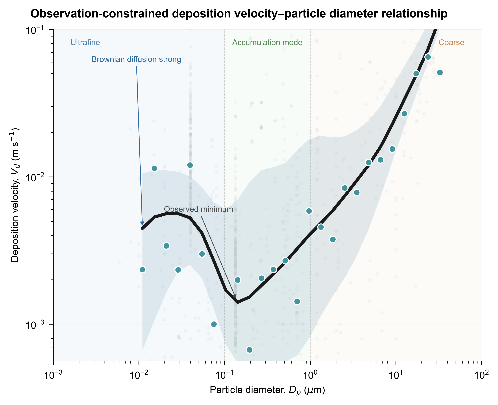
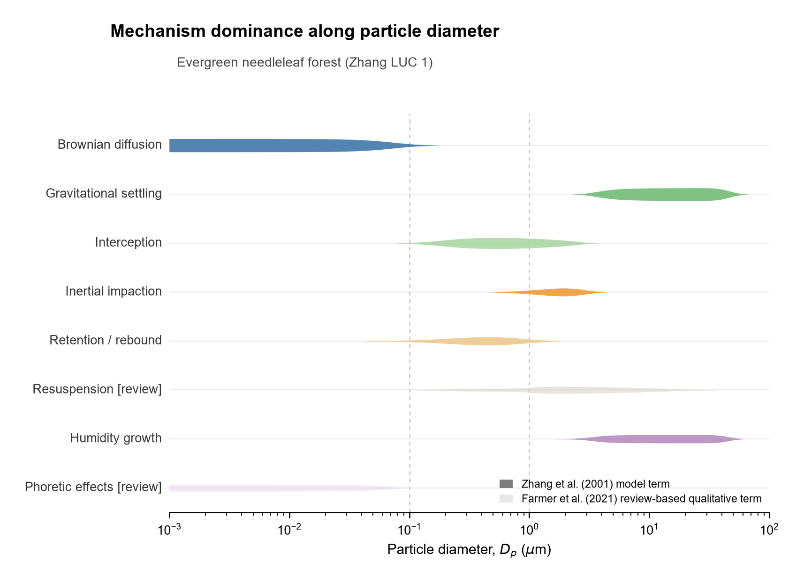
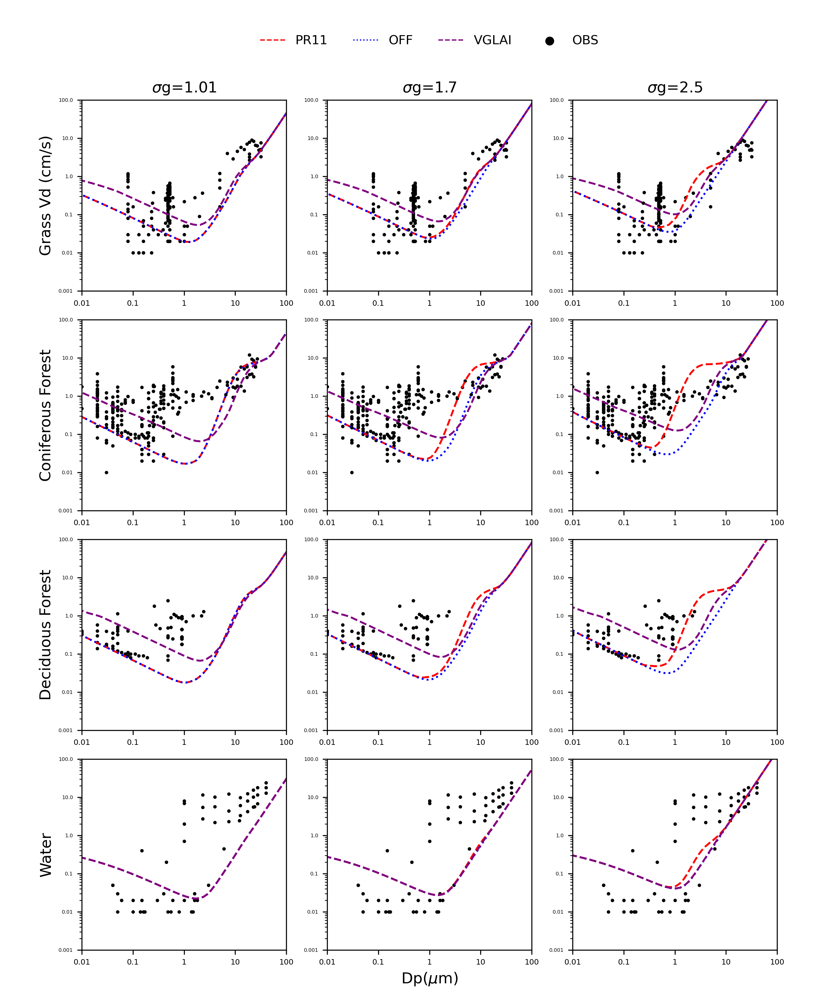

Literature
review expansion
Research Focus
review expansion
methods & figures
Dp · Vd · env
units · LUC
align · tidy
mechanism · figure
Evidence synthesis for particle dry-deposition review: literature screening, parameter extraction, metadata audit, and figure production.
开展颗粒物干沉降综述，整理观测证据、核查参数并绘制机制图表。
Reach me at 27230227@njnu.edu.cn
Explore research storyResearch Question
Dp · surface · turbulence · Vd curve
ultrafine / accumulation / coarse
forest / grass / water / snow
Vd as the core response
diffusion / interception / settling
particle diameter vs deposition velocity
Evidence Structure
source papers · metadata fields · quality control
Farmer / Shu / cited papers
observation / wind tunnel / model evaluation
30+ fields for cross-study comparison
units / height / Dp basis / surface notes
dedupe / align / interpolation / mapping
Figures
Vd–Dp curve · mechanism bands · surface comparison



Research Transition
evidence synthesis · ERA5/NetCDF · model diagnosis
mechanism tables and observation evidence
Python / NetCDF / ERA5
soil moisture / temperature / anomalies
PLASIM / CMIP6 / process interpretation
Research Workflow
Literature screening → metadata audit → figures
review · source papers
从综述和导师论文扩展原始文献
methods · variables · figures
阅读原文，定位方法、变量和图表
Dp · Vd · environment
提取粒径、沉降速度和环境参数
units · height · LUC
核查单位、高度、粒径基准和下垫面
dedupe · align · tidy
去重、统一单位并按模型需求整理
formula · scheme · figure
连接机制公式、参数化方案与图表表达
My Research Training Path
From evidence synthesis to climate data diagnosis
Stage 1
literature review · metadata audit · mechanism tables
整理干沉降文献证据，建立机制对照表与元数据字段。
Stage 2
Python · NetCDF · ERA5 · visualization
学习 Python、NetCDF 与 ERA5 数据读取和制图。
Stage 3
CMIP6 · PLASIM · model diagnosis · uncertainty
学习 PLASIM/CMIP6 模式资料诊断与不确定性分析。
当前工作：干沉降文献综述、观测证据表整理、元数据核查与机制图绘制。
Contact
Nanjing Normal University · land-atmosphere · climate diagnosis
Open to research collaboration and summer training inquiries.
南京师范大学海洋资源与环境本科生。开展颗粒物干沉降综述：文献扩展、参数提取、元数据核查与图表绘制。同期学习 PLASIM 与气候数据分析。
颗粒物干沉降 · 大气-地表交换
证据整合 · 元数据核查 · 图表表达
土壤湿度 · 陆气耦合 · CMIP6 诊断